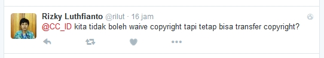

Tanya Jawab Sobat CCID 2 Juli 2016

Pada twitter Creative Commons Indonesia, Rizky Luthfianto mengajukan pertanyaan tentang hak cipta dan Creative Commons:
“Kita tidak boleh melepaskan hak cipta, tetapi apakah kita tetap bisa menyerahkan/memindahkan/mengalihkan hak cipta?
Ketentuan mengenai pelepasan hak cipta kepada domain publik, dengan ketentuan pengalihan hak cipta kepada pihak lain merupakan dua hal yang berbeda. Di Indonesia, pelepasan hak cipta kepada domain publik berkaitan dengan pengaturan mengenai masa berlaku hak cipta. Sedangkan perbuatan menyerahkan atau mengalihkan hak cipta berkaitan dengan pengaturan mengenai pemberian izin penggunaan ciptaan atau pelisensian ciptaan. Kedua hal ini diatur di dalam Undang-Undang No. 28 Tahun 2014 Tentang Hak Cipta (UUHC 2014).
{kind=link}
Ilustrasi di atas adalah contoh gambar yang telah masuk domain publik karena dipublikasikan oleh pemerintah Indonesia ditahun 1951.
Rezim hak cipta nasional kita tidak mengenal pelepasan hak cipta kepada domain publik oleh pencipta. Apabila seorang pencipta ingin mendedikasikan ciptaannya secara penuh kepada publik, pencipta tersebut harus mengikuti ketentuan tentang masa berlaku hak cipta yaitu 70 tahun ditambah 1 tahun (berlaku mulai tanggal 1 Januari) setelah pencipta meninggal dunia. Hal ini menjadi dasar hukum bagaimana ketentuan CC0 tidak dapat diterapkan di Indonesia (simak konteks pembicaraan sebelumnya dengan membuka tautan ini). Namun, kita tetap dapat menggunakan perangkat Public Domain Mark untuk menandai ciptaan-ciptaan yang sudah habis masa berlaku hak ciptanya di Indonesia. Informasi lebih lanjut mengenai ketentuan masa berlaku hak cipta di Indonesia dapat anda baca di sini.
Menurut UUHC 2014, lisensi adalah izin tertulis yang diberikan oleh Pemegang Hak Cipta atau Pemilik Hak Terkait kepada pihak lain untuk melaksanakan hak ekonomi atas Ciptaannya atau produk Hak Terkait dengan syarat tertentu. Berbeda dengan ketentuan yang berlaku pada ciptaan yang sudah masuk ke domain publik atau habis masa berlaku hak ciptanya, ketentuan ini memungkinkan pihak lain untuk menggunakan ciptaan tanpa mengharuskan pencipta melepaskan hak ciptanya secara penuh ke domain publik.
Apabila seorang Pencipta menganut paham “All Rights Reserved” (Semua Hak Dipertahankan), maka setiap pengguna ciptaan harus meminta izin secara langsung untuk setiap bentuk penggunaan terhadap ciptaannya. Namun, seorang pencipta yang menganut paham “Some Rights Reserved” (Beberapa Hak Dipertahankan), dapat memanfaatkan lisensi terbuka seperti lisensi Creative Commons untuk menginformasikan kepada pengguna bahwa pencipta mengizinkan penggunaan terhadap ciptaannya dengan syarat atau batasan tertentu. Lisensi Creative Commons (Lisensi CC) menyediakan 4 batasan tertentu (spektrum pilihan lisensi Creative Commons) yang dapat pencipta gunakan pada ciptaannya:
- Attribution (Atribusi/BY): Ketentuan ini mewajibkan Anda untuk mencantumkan nama yang sesuai, mencantumkan tautan terhadap lisensi, dan menyatakan bahwa telah ada perubahan yang dilakukan terhadap suatu ciptaan.
- Noncommercial (Non-Komersial/NC): Ketentuan ini melarang Anda untuk melibatkan kepentingan komersial dalam penggunaan suatu ciptaan.
- No Derivative Works (Tanpa Turunan/ND): Ketentuan ini memperbolehkan Anda untuk menyalin, mendistribusikan, menampilkan, dan mempertunjukkan suatu ciptaan, namun Anda dilarang untuk menyebarluaskan hasil ubahan, gubahan, dan ciptaan turunan yang Anda buat atas ciptaan tersebut.
- Share Alike (Berbagi Serupa/SA): Ketentuan ini yang mewajibkan Anda untuk menerapkan lisensi yang sama apabila Anda melakukan pengubahan, penggubahan, dan pembuatan ciptaan turunan terhadap suatu ciptaan.
Lisensi CC tidak hanya dapat digunakan untuk mengikat satu atau dua pihak saja. Pencipta dapat mengikat seluruh pihak yang mengakses dan menggunakan ciptaannya, yang misalnya dibagikan secara bebas di dalam jaringan. Tombol lisensi CC yang mengandung spektrum pilihan yang telah dipilih oleh Pencipta, dapat dilekatkan pada ciptaan yang dibagikan. Informasi mengenai contoh-contoh pelekatan tombol lisensi CC pada ciptaan dapat dibaca di tautan ini.
Semoga membantu. Pokoknya Creative Commons!